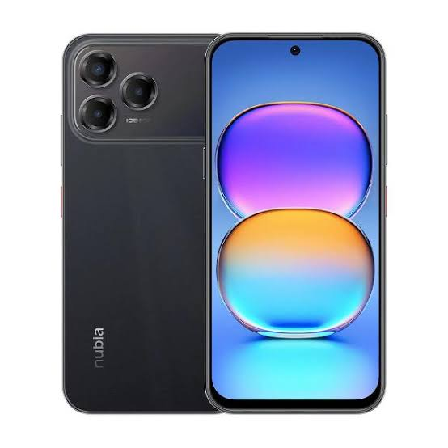

Imagen del Dispositivo

Descripción
Un teléfono táctil es un dispositivo móvil que permite interactuar con la pantalla mediante toques directos. En el contexto de la nube, los teléfonos táctiles sirven como puntos de acceso a servicios en línea, permitiendo a los usuarios navegar por internet, acceder a aplicaciones y compartir datos en tiempo real. En el contexto de la nube, actúa como un terminal cliente potente que permite a los usuarios acceder a aplicaciones web, procesar datos y conectarse a servidores remotos para realizar tareas complejas, como el desarrollo de software y la gestión de sistemas cliente-servidor.